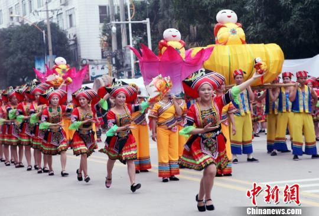

壮族老家—养生上林，徐霞客最眷恋的地方欢迎您！
文化习俗：渡河公文化旅游节


农历五月初五端午节，是中国最大的传统节日，广西上林的三里镇一带，却有着另一番的热闹，家家户户齐聚清清的小河边欢度当地的民间民俗活动"渡河公"节，原叫渡渡河公，按三里话的说法又叫做"渡渡河公"。该民俗形成于明朝，至今有四百年的历史 。每年农历的这一个傍晚，男女老少们都自发涌向三里南边的小河--汇水河。在一东一西河溪流相交汇的汇水桥畔举行重大的"渡河公"活动。每年农历五月初一，三里镇一带的姑娘们聚集在一起，唱着山歌，制作"渡河公"。直到现在，每年五月初五端午节傍晚，在清水河畔，村里的男女老少依然一边吟咏祈祷词，一边把做好的"渡河公"用红或黄丝线悬挂在小孩的脖子上，垂至小孩的肚脐部位，因"香艾"有驱邪、压惊、镇痛的作用，可保护孩童安康。或者把"渡河公"和棕子放在一艘小船上，点上红蜡烛，沿河漂流，让点点河灯带走岁月的不幸和忧伤，村民们一起祈祷:家人幸福安康、祖国繁荣昌盛。
关于渡河公的传说：相传在远古时代，天地遭遇大荒洪，整个世界一片汪洋。只有一对男女抱住一个神奇的大南瓜飘浮在水面而免幸遇难。洪水过后，整个世界的人类只剩下了这对男女，他们上岸后，两人重新开始生活，繁衍了人类。后来的现代人，将这两人奉为人类的始祖先。这个版本目前算是比较官方的版本，许多外地慕名"渡河公"活动的人都对这个故事较为知晓。